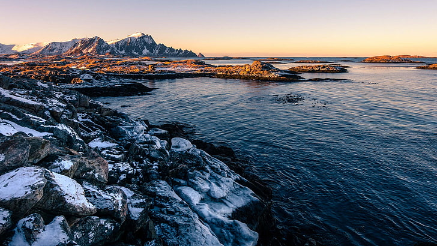

The fjords, mountains and northern lights of Norway are known throughout
the world. As is the “capitalism with a conscience” philosophy. But
other than the obvious, how much do you really know about this
Scandinavian country?
Whether you're preparing for a quiz night or you just want to impress
your friends with some random knowledge, these Norwegian tidbits are
just what you need! Grab a pen, get comfortable, have your favourite hot
drink handy. Here come the Norway facts you never knew you needed to
know!
The world's longest road tunnel is in Norway
At an astonishing 15 miles (24.5 km) long, the Lærdal Tunnel is
the world’s longest. Costing 1 billion Norwegian kroner to build
(that's about USD $110 million) the tunnel connects the small
communities of Lærdal and Aurland.
No-one knows how long Norway's coastline is!
The somewhat counterintuitive observation that the coastline of a
landmass does not have a well-defined length is known as the
coastline paradox. Because of the fractal nature of a coastline,
you can only define its length by using units of a specific
length. When the unit length differs, the total length differs –
and the difference
can be massive.

Norway costs
It’s A Great Spot For The Aurora Borealis
The what now? We mean the Northern Lights, of course. This
astounding light show happens when charged particles from the sun
meet atoms in the Earth’s upper atmosphere, resulting in the
release of photons (light particles). Regardless of the science
behind it, the aurora borealis is beautiful, like green, red, and
blue ribbons in the sky. Best seen further north.
Norway: Laerdal
Norwegian, Danish, And Swedish Are Mutually Intelligible
So, if you don’t speak Norwegian but you do speak Danish, then you
can have a conversation. Likewise, if you’re in Sweden and you
speak Swedish and happen to meet a Norwegian person, you’ll
probably be able to understand each other. That’s Nordic languages
for you.
 Welcome to the Norway
Welcome to the Norway